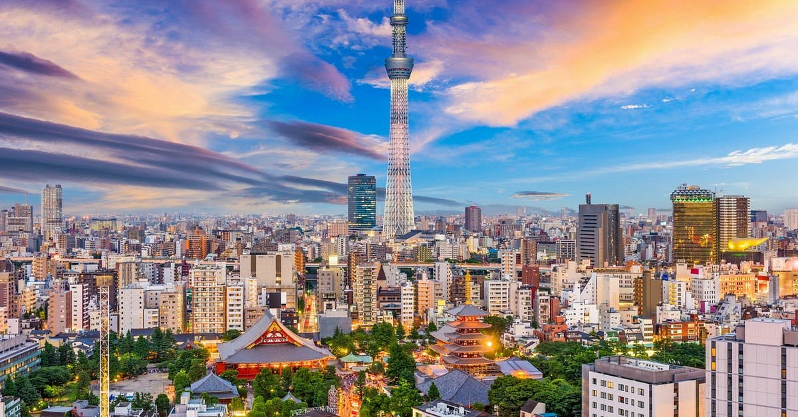

Tokyo mesmerizes visitors with its fascinating duality of ultramodern technology and ancient traditions. In this metropolis, you can witness centuries-old temples standing peacefully alongside futuristic skyscrapers, while kimono-clad locals navigate through neon-lit streets.
From the electric energy of Shibuya to the pop culture paradise of Akihabara, each district tells its own unique story. Tokyo's legendary food scene ranges from pristine sushi bars and cozy ramen shops to Michelin-starred restaurants, making it a true culinary capital.
Entertainment options are endless, from the serene Senso-ji Temple to the towering Tokyo Skytree. The city's themed cafes, gaming centers, and Studio Ghibli Museum offer unique experiences, while Tokyo DisneySea and Disneyland provide magical adventures for all ages.